СП 405.1325800.2018 «Конструкции бетонные с неметаллической фиброй и полимерной»
О документе: разработчики, утверждение, регистрация, ключевые слова
1 ИСПОЛНИТЕЛЬ -Акционерное общество «Научно-исследовательский центр «Строительство» (АО «НИЦ «Строительство») - НИИЖБ им. А.А. Гвоздева
2 ВНЕСЕН Техническим комитетом по стандартизации ТК 465 «Строительство»
3 ПОДГОТОВЛЕН К УТВЕРЖДЕНИЮ Департаментом градостроительной деятельности и архитектуры Министерства строительства и жилищно-коммунального хозяйства Российской Федерации (Минстрой России)
4 УТВЕРЖДЕН Приказом Министерства строительства и жилищно-коммунального хозяйства Российской Федерации (Минстрой России) от 24 декабря 2018 г. № 850/пр и введен в действие с 25 июня 2019 г.
5 ЗАРЕГИСТРИРОВАН Федеральным агентством по техническому регулированию и метрологии (Росстандарт)
В случае пересмотра (замены) или отмены настоящего свода правил соответствующее уведомление будет опубликовано в установленном порядке. Соответствующая информация, уведомление и тексты размещаются также в информационной системе общего пользования - на официальном сайте разработчика (Минстрой России) в сети Интернет
© Минстрой России, 2018
Настоящий нормативный документ не может быть полностью или частично воспроизведен, тиражирован и распространен в качестве официального издания на территории Российской Федерации без разрешения Минстроя России
Дата введения - 2019 - 06 - 25
Введение
6 ВВЕДЕН ВПЕРВЫЕ
Настоящий свод правил разработан с учетом требований федеральных законов от 27 декабря 2002 г. № 184-ФЗ «О техническом регулировании», от 30 декабря 2009 г. № 384-ФЗ «Технический регламент о безопасности зданий и сооружений» и содержит требования к расчету и проектированию бетонных конструкций с неметаллической фиброй, армированных полимерной композитной арматурой.
Свод правил разработан авторским коллективом АО «НИЦ «Строительство» - НИИЖБ им. А.А. Гвоздева (руководитель работы - д-р техн. наук Т.А. Мухамедиев ; д-р техн. наук В.Ф.Степанова, канд-ты техн. наук Д.В. Кузеванов, А.В.Бучкин) .
1Область применения
Настоящий cвод правил устанавливает требования к проектированию фибробетонных конструкций с неметаллической фиброй и полимерной арматурой, изготовляемых из тяжелого и мелкозернистого бетонов, эксплуатируемых в климатических условиях России (при систематическом воздействии температур не выше плюс 50 °С и не ниже минус 70 °С) при статическом действии нагрузки, и распространяется на проектирование фибробетонных конструкций различного назначения, армированных неметаллической фиброй и композитной полимерной арматурой на основе углеродных, арамидных, базальтовых или стеклянных волокон .
2Нормативные ссылки
В настоящем своде правил использованы нормативные ссылки на следующие документы: CП 63.13330.2012 «СНиП 52-01-2003 Бетонные и железобетонные конструкции. Основные положения» (с изменениями № 1, № 2, № 3)
СП 295.1325800.2017 «Конструкции бетонные, армированные полимерной композитной арматурой. Правила проектирования»
СП 297.1325800.2017 «Конструкции фибробетонные с неметаллической фиброй. Правила проектирования»
Примечание - При пользовании настоящим сводом правил целесообразно проверить действие ссылочных документов в информационной системе общего пользования - на официальном сайте федерального органа исполнительной власти в сфере стандартизации в сети Интернет или по ежегодному информационному указателю «Национальные стандарты», который опубликован по состоянию на 1 января текущего года, и по выпускам ежемесячного информационного указателя «Национальные стандарты» за текущий год. Если заменен ссылочный документ, на который дана недатированная ссылка, то рекомендуется использовать действующую версию этого документа с учетом всех внесенных в данную версию изменений. Если заменен ссылочный документ, на который дана датированная ссылка, то рекомендуется использовать версию этого документа с указанным выше годом утверждения (принятия). Если после утверждения настоящего свода правил в ссылочный документ, на который дана датированная ссылка, внесено изменение, затрагивающее положение, на которое дана ссылка, то это положение рекомендуется применять без учета данного изменения. Если ссылочный документ отменен без замены, то положение, в котором дана ссылка на него, рекомендуется применять в части, не затрагивающей эту ссылку. Сведения о действии сводов правил целесообразно проверить в Федеральном информационном фонде стандартов.
\_\_\_\_\_\_\_\_\_\_\_\_\_\_\_\_\_\_\_\_\_\_\_\_\_\_\_\_\_\_\_\_\_\_\_\_\_\_\_\_\_\_\_\_\_\_\_\_\_\_\_\_\_\_\_\_\_\_\_\_\_\_\_\_\_\_\_\_\_\_\_\_\_\_\_\_\_
Правила проектирования
CONSTRUCTION OF CONCRETE WITH NON-STEEL FIBER REINFORCEMENT AND POLYMER REINFORCEMENT. RULES OF DESIGN
.
3Термины и определения
В настоящем своде правил применены термины по СП 63.13330, СП 295.1325800 и СП 297.1325800, а также следующие термины с соответствующими определениями:
- 3.1фибробетонные конструкции с АКП
- Конструкции из фибробетона с неметаллической фиброй и с композитной полимерной арматурой (в том числе предварительно напряженной);
- 3.2АКП
- арматура композитная полимерная.
4Общие требования
5Материалы
6Конструкции без предварительного напряжения арматуры
6.1Расчет конструкций по предельным состояниям первой группы
Расчет по прочности элементов конструкций на действие изгибающих моментов и продольных сил
Общие положения
Расчет по прочности нормальных сечений элементов следует производить на основе нелинейной деформационной модели согласно 6.1.13.
Расчет по прочности нормальных сечений элементов прямоугольного, таврового и двутаврового сечений без арматуры или с арматурой, расположенной у верхней и нижней граней сечения, допускается производить по предельным усилиям.
Расчет по прочности нормальных сечений по предельным усилиям
- сопротивление фибробетона растяжению представляется остаточными напряжениями, равными 2 fbt R или 3 fbt R и равномерно распределенными по растянутой зоне фибробетона;
- сопротивление фибробетона сжатию представляется напряжениями, равными Rfb и равномерно распределенными по сжатой зоне фибробетона;
- деформации (напряжения) в арматуре определяют в зависимости от высоты сжатой зоны фибробетона;
- сопротивление композитной полимерной арматуры сжатию принимается равным нулю;
- растягивающие напряжения в композитной полимерной арматуре принимаются не более ее расчетного сопротивления растяжению.
Значение R следует определять по формуле
где - характеристика сжатой зоны фибробетона, принимаемая для фибробетона из тяжелого бетона классов до В60 включительно равной 0,8, а для фибробетона из тяжелого бетона классов В70 - В100 и из мелкозернистого бетона - равной 0,7;
- f - расчетное значение предельных относительных деформаций композитной полимерной арматуры, принимаемое по СП 295.1325800;
2 fb - относительные деформации сжатого фибробетона при напряжениях Rfb , принимаемые по СП 63.13330 как для обычного тяжелого бетона.
Расчет изгибаемых элементов
где М - изгибающий момент от внешней нагрузки;
Мult - предельный изгибающий момент, который может быть воспринят сечением элемента.
где х - высота сжатой зоны фибробетона, определяемая по формуле
f R -расчетное значение сопротивления композитной полимерной арматуры растяжению;
3 fbt R - расчетное значение остаточной прочности фибробетона на осевое растяжение; fb R - расчетное значение прочности фибробетона на осевое сжатие.
Рисунок 1 - Схема усилий и эпюра напряжений в сечении, нормальном к продольной оси изгибаемого фибробетонного элемента прямоугольного сечения с АКП, при его расчете по прочности
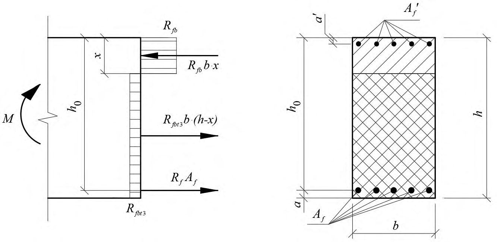
значение Мult определяют по формуле
при этом высоту сжатой зоны определяют по формуле
если граница проходит в ребре (рисунок 2, б ), т. е. условие (6.5) не соблюдается, значение Мult определяют по формуле
при этом высоту сжатой зоны фибробетона х определяют по формуле
Значение ' f b , вводимое в расчет, принимают по 8.1.11 СП 63.13330.2012.
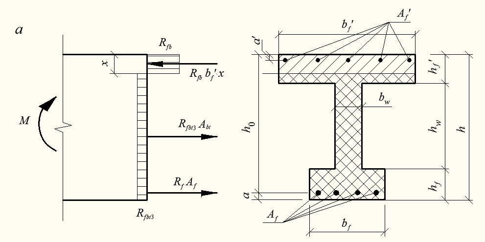
Рисунок 2 - Положение границы сжатой зоны в сечении изгибаемого фибробетонного элемента с АКП
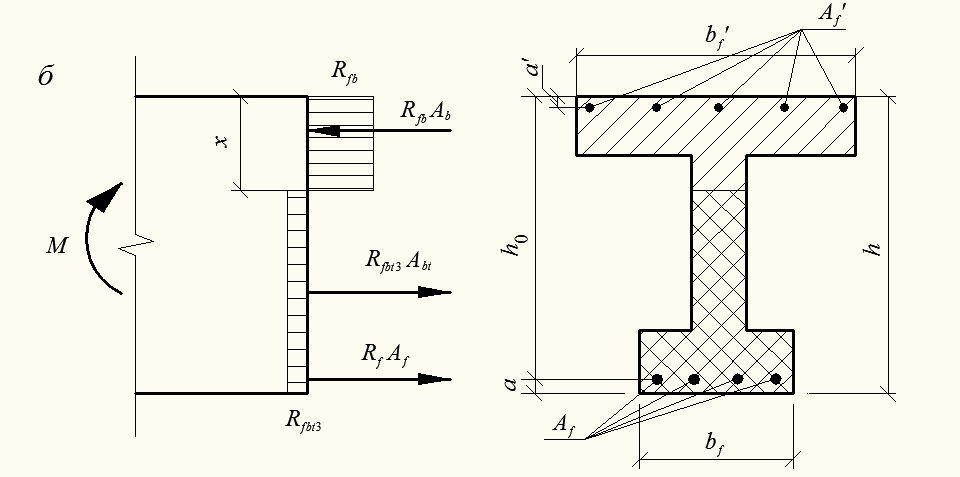
В случае, когда площадь растянутой арматуры принята большей, чем это требуется для соблюдения условия , 0 h x R предельный изгибающий момент Мult для изгибаемых конструкций прямоугольного сечения следует определять по формуле (6.3), подставляя в нее значение высоты сжатой зоны, вычисленное по формуле
где
2 fb - то же, что и в формуле (6.1);
- принимают по 6.1.5.
Расчет по прочности изгибаемых конструкций таврового или друтаврового сечений с полкой в сжатой зоне и высоте сжатой зоны 0 h x R следует производить по деформационной модели согласно 6.1.15-6.1.21.
Расчет внецентренно сжатых элементов
Расчет по прочности внецентренно сжатых фибробетонных элементов без рабочей арматуры при расположении продольной сжимающей силы за пределами поперечного сечения элемента, а также внецентренно сжатых фибробетонных элементов без рабочей арматуры при расположении продольной сжимающей силы в пределах поперечного сечения элемента, в которых по условиям эксплуатации не допускается образование трещин, производят с учетом сопротивления фибробетона растянутой зоны по 7.1.7-7.1.11 СП 63.13330.2012, при этом в расчетные зависимости вместо характеристик b R и bt R следует подставлять fb R и fbt R .
где N - продольная сила от внешней нагрузки; е - расстояние от точки приложения продольной силы N до центра тяжести сечения растянутой арматуры рассчитывают по формуле
где е 0 - начальный эксцентриситет, принимаемый по 8.1.7 СП 63.13330.2012; η - коэффициент, определяемый по формуле (7.6) СП 63.13330.2012.
Высоту сжатой зоны х определяют:
при R h x ξ ξ 0 = - по формуле
Рисунок 3 - Схема усилий и эпюра напряжений в сечении, нормальном к продольной оси внецентренно сжатого фибробетонного элемента с АКП, при расчете ее по прочности
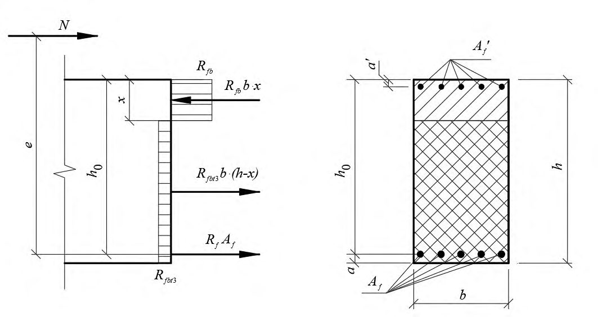
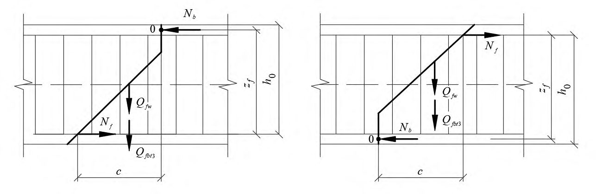
Расчет по прочности нормальных сечений на основе нелинейной деформационной модели
- в расчетах следует учитывать работу бетона растянутой зоны сечения элемента;
- связь между осевыми напряжениями и относительными деформациями растянутой композитной полимерной арматуры принимают линейной;
- сопротивление композитной полимерной арматуры сжатию не учитывается;
- диаграммы осевого сжатия и осевого растяжения фибробетона следует принимать согласно СП 297.1325800;
- при внецентренном сжатии или растяжении элементов и распределении в поперечном сечении элемента деформаций только одного знака предельные значения относительных деформаций фибробетона при растяжении ε fbt , ult следует определять в зависимости от соотношения деформаций фибробетона на противоположных гранях сечения элемента ε1 и ε2 по формуле ( ) 2 1
Расчет по прочности элементов при действии поперечных сил
Расчет элементов по полосе между наклонными сечениями
Расчет элементов по наклонному сечению на действие поперечных сил
Расчет элементов по наклонному сечению на действие моментов
где М - момент в наклонном сечении с длиной проекции С на продольную ось элемента, определяемый от всех внешних сил, расположенных по одну сторону от рассматриваемого наклонного сечения, относительно конца наклонного сечения (точка 0), противоположного концу, у которого располагается проверяемая продольная композитная полимерная арматура, испытывающая растяжение от момента в наклонном сечении; при этом учитывают наиболее опасное нагружение в пределах наклонного сечения;
Мf - момент, воспринимаемый продольной арматурой, пересекающей наклонное сечение, относительно противоположного конца наклонного сечения (точка 0);
Мfw - момент, воспринимаемый поперечной арматурой, пересекающей наклонное сечение, относительно противоположного конца наклонного сечения (точка 0);
Мfbt - момент, воспринимаемый фибробетоном, относительно противоположного конца наклонного сечения (точка 0).
Моменты Мf и Мfw определяют по 8.1.35 СП 63.13330.2012, при этом в расчетные зависимости вместо характеристик стальной арматуры следует подставлять характеристики композитной полимерной арматуры.
Рисунок 4 - Схема усилий при расчете фибробетонных элементов с АКП по наклонному сечению на действие моментов
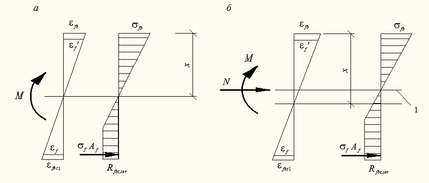
Момент Мfbt определяют по формуле
где Qfbt 3 определяют по формуле
Расчет производят для наклонных сечений, расположенных по длине элемента на его концевых участках и в местах обрыва продольной композитной полимерной арматуры, при наиболее опасной длине проекции наклонного сечения С , принимаемой в пределах от 1,0 h 0 до 2,0 h 0.
Расчет фибробетонных элементов на местное сжатие
Расчет фибробетонных элементов на продавливание
6.2Расчет конструкций по предельным состояниям второй группы
Расчет фибробетонных элементов по образованию и раскрытию трещин
Определение момента образования трещин, нормальных к продольной оси элемента
Для элементов прямоугольного, таврового или двутаврового сечения с арматурой, расположенной у верхней и нижней граней, момент трещинообразования с учетом неупругих деформаций растянутого фибробетона допускается определять согласно 6.2.6-6.2.8.
- сечения после деформирования остаются плоскими;
- эпюру напряжений в сжатой зоне фибробетона принимают треугольной формы, как для упругого тела (рисунок 5);
- эпюру напряжений в растянутой зоне фибробетона принимают трапециевидной формы с напряжениями, не превышающими расчетных значений сопротивления фибробетона растяжению Rfbt,ser ;
- относительную деформацию крайнего растянутого волокна фибробетона принимают равной 1 fbt ;
- сопротивление композитной полимерной арматуры сжатию не учитывают;
- напряжения в растянутой композитной полимерной арматуре принимают в зависимости от относительных деформаций как для упругого тела.
где Wpl - упругопластический момент сопротивления сечения для крайнего растянутого волокна фибробетона, определяемый с учетом 6.2.6; ех - расстояние от точки приложения продольной силы N (расположенной в центре тяжести приведенного сечения элемента) до ядровой точки, наиболее удаленной от растянутой зоны, трещинообразование которой проверяется.
В формуле (6.19) знак «плюс» принимают при сжимающей продольной силе N , «минус» - при растягивающей силе.
1 уровень центра тяжести приведенного поперечного сечения
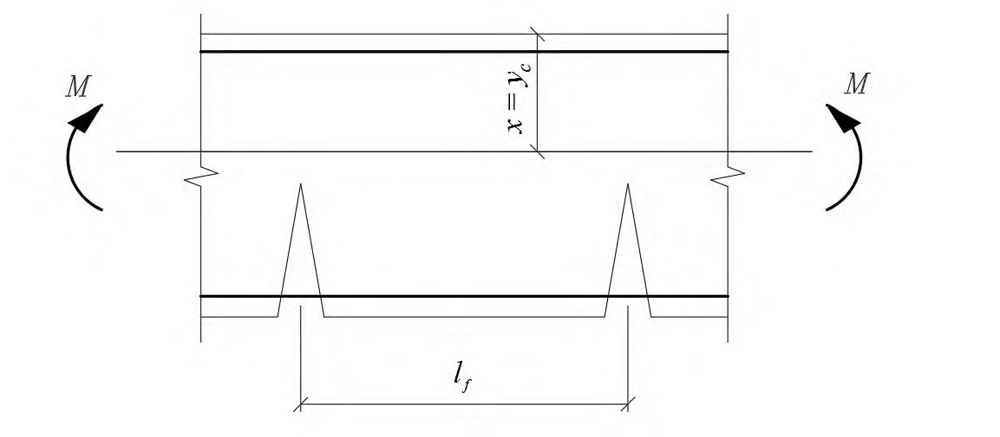
Рисунок 5 - Схема напряженно-деформированного состояния сечения фибробетонного элемента с АКП при проверке образования трещин при действии изгибающего момента (а) и изгибающего момента и продольной силы (б)
Для прямоугольных сечений значение Wpl при действии момента в плоскости оси симметрии допускается принимать равным
где Wred - упругий момент сопротивления приведенного сечения по растянутой зоне сечения, определяемый в соответствии с 8.2.12 СП 63.13330.2012; γ - коэффициент, учитывающий неупругие свойства бетона растянутой зоны сечения
здесь В - числовая характеристика класса фибробетона по прочности на осевое сжатие.
Расчет ширины раскрытия трещин, нормальных к продольной оси элемента
где φ1 - коэффициент, учитывающий продолжительность действия нагрузки, принимаемый равным:
1,0 - при непродолжительном действии нагрузки;
1,4 - при продолжительном действии нагрузки;
f - коэффициент, учитывающий неравномерное распределение относительных деформаций растянутой арматуры между трещинами; допускается принимать f
= 1; если при этом ширина раскрытия трещин превосходит предельно допустимое значение, то значение f следует определять по 6.2.12;
f - напряжение в продольной растянутой арматуре в нормальном сечении c трещиной от соответствующей внешней нагрузки, определяемое согласно 6.2.10; φ3 - коэффициент, учитывающий характер нагружения, принимаемый равным:
1,0 - для элементов изгибаемых и внецентренно сжатых;
1,2 - для растянутых элементов; l f - базовое (без учета влияния вида поверхности арматуры) расстояние между смежными нормальными трещинами, определяемое согласно 6.2.11.
где - момент инерции и высота сжатой зоны приведенного поперечного сечения элемента, определяемые с учетом площади сечения cжатой и растянутой зон фибробетона, площадей сечения растянутой арматуры согласно 6.2.16, принимая в соответствующих формулах значения коэффициентов приведения арматуры и фибробетона растянутой зоны к фибробетону сжатой зоны равными: , red c I y
Efb , red - приведенный модуль деформации сжатого фибробетона, учитывающий неупругие деформации сжатого фибробетона и определяемый по формуле
Относительную деформацию фибробетона ε fb 1, red принимают равной 0,0015.
Для изгибаемых элементов yc=x (рисунок 6 а, б), где х - высота сжатой зоны фибробетона, определяемая согласно 6.2.17 с учетом (6.23).
Допускается напряжение f определять по формуле
bt A - площадь растянутой зоны сечения элемента, определяемая по высоте растянутой зоны фибробетона xt , используя правила расчета момента образования трещин согласно 6.2.4 - 6.2.8;
- bt z - расстояние от точки приложения равнодействующей усилий в растянутой зоне элемента до точки приложения равнодействующей усилий в сжатой зоне элемента;
- f z - расстояние от центра тяжести растянутой композитной полимерной арматуры до точки приложения равнодействующей усилий в сжатой зоне элемента. а
1 - уровень центра тяжести приведенного поперечного сечения
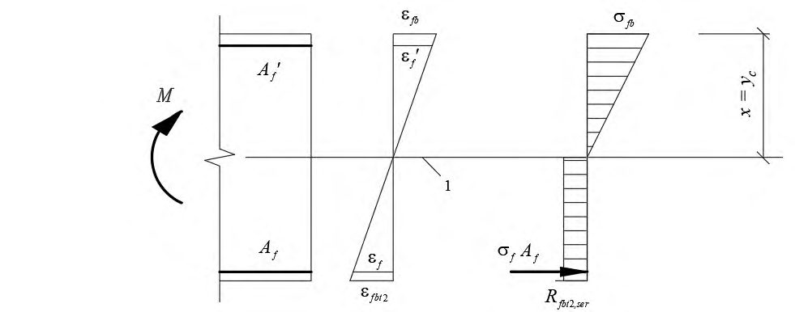
Рисунок 6 - Схема напряженно-деформированного состояния фибробетонного элемента с трещинами при действии изгибающего момента ( а, б ), изгибающего момента и продольной силы ( в )
Для элементов прямоугольного поперечного сечения значения f z и bt z в (6.25) определяют по формулам:
При действии изгибающего момента и продольной силы (рисунок 6, в ) напряжение f в растянутой арматуре определяют по формуле M N
где - площадь приведенного поперечного сечения элемента и расстояние от наиболее сжатого волокна фибробетона до центра тяжести приведенного сечения, определяемые по общим правилам расчета геометрических характеристик сечений упругих элементов с учетом площади сечения cжатой и растянутой зон фибробетона, площадей сечения растянутой арматуры согласно 6.2.17, принимая коэффициенты приведения арматуры и фибробетона растянутой зоны к фибробетону сжатой зоны по формулам (6.23). , red c A y
Допускается напряжение f определять по формуле
где еf - расстояние от центра тяжести растянутой арматуры до точки приложения продольной силы N с учетом эксцентриситета, равного . M
N
Для элементов прямоугольного сечения значения f z и bt z в (6.28) допускается определять по формулам (6.26), в которые вместо x следует подставлять - высоту сжатой зоны фибробетона с учетом влияния продольной силы, определяемую согласно 6.2.17, принимая коэффициенты приведения арматуры и фибробетона растянутой зоны к фибробетону по формулам (6.23). x m
В формулах (6.27) и (6.28) знак «плюс» принимают при растягивающей, а знак «минус» при сжимающей продольной силе.
Значения напряжений f не должны превышать значения расчетных сопротивлений арматуры растяжению для предельных состояний второй группы Rf,ser .
Значения Abt определяют по высоте растянутой зоны фибробетона xt , используя правила расчета момента образования трещин согласно 6.2.4-6.2.7.
и принимают не более h , где f k - коэффициент, принимаемый равным:
где f d и f l - диаметр (диаметр окружности с площадью, равной средней площади поперечного волокна) и длина фибры; φ2 - коэффициент, учитывающий вид поверхности продольной композитной полимерной арматуры, принимаемый равным 0,4; φ3 - коэффициент, учитывающий характер нагружения, принимаемый равным:
0,5 - для элементов изгибаемых и внецентренно сжатых;
1,0 - для растянутых элементов;
Af d - номинальный диаметр продольной композитной полимерной арматуры; fv - коэффициент фибрового армирования по объему.
Если при проведении расчетов значение коэффициента fv не установлено, то в формулу (6.29) подставляют его минимально допустимое значение, рекомендованное в 8.3.
Если при проведении расчетов значения f d и f l неизвестны, то коэффициент f k в формуле (6.29) принимают равным 1,0.
где crc f , - напряжение в продольной растянутой арматуре в сечении с трещиной сразу после образования нормальных трещин, определяемое по 6.2.10, принимая в соответствующих формулах значения M = Mcrc ; f - то же, при действии рассматриваемой нагрузки.
Для изгибаемых элементов значение коэффициента ψ f допускается определять по формуле
где Mcrc определяют по формуле (6.19).
Расчет фибробетонных элементов по прогибам
Определение кривизны фибробетонных элементов
Жесткость фибробетонного элемента на участке без трещин в растянутой зоне
где Efb 1 - модуль деформации сжатого фибробетона, определяемый в зависимости от продолжительности действия нагрузки;
Ired - момент инерции приведенного поперечного сечения относительно его центра тяжести, определяемый с учетом наличия или отсутствия трещин.
Момент инерции Ired приведенного поперечного сечения элемента относительно его центра тяжести определяют как для сплошного тела по общим правилам сопротивления упругих элементов с учетом всей площади сечения фибробетона и площадей сечения арматуры с коэффициентом приведения арматуры к фибробетону
где I - момент инерции фибробетонного сечения относительно центра тяжести приведенного поперечного сечения элемента;
If - момент инерции площади сечения растянутой арматуры относительно центра тяжести приведенного поперечного сечения элемента; f - коэффициент приведения арматуры к бетону
Значение I определяют по общим правилам расчета геометрических характеристик сечений упругих элементов.
Допускается определять момент инерции Ired без учета арматуры.
Значения модуля деформации бетона в формулах (6.32) и (6.34) принимают равными:
- при непродолжительном действии нагрузки
- при продолжительном действии нагрузки
где φ b , cr - принимают по таблице 6.12 СП 63.133300.2012.
Жесткость фибробетонного элемента на участке с трещинами в растянутой зоне
- сечения после деформирования остаются плоскими;
- напряжения в фибробетоне сжатой зоны определяют как для упругого тела;
- напряжения в фибробетоне растянутой зоны в сечении с нормальной трещиной определяют с учетом нелинейных свойств;
- работу растянутого фибробетона на участке между смежными нормальными трещинами учитывают посредством коэффициента ψ f .
Жесткость фибробетонного элемента D на участках с трещинами определяют по формуле (6.32) и принимают не более жесткости без трещин.
Значение модуля деформации сжатого фибробетона Efb 1 принимают равным значению приведенного модуля деформации Efb,red , определяемого по формуле
в которой значения относительных деформаций fb 1, red принимают равными:
0,0015 - при непродолжительном действии нагрузки; по СП 63.13330.2012 (таблица 6.10) - при продолжительном действии нагрузки.
Значение модуля деформации растянутого фибробетона Efbt 1 принимают равным значению приведенного модуля деформации Efbt,red , определяемого по формуле
где 0,004 2 = fbt - предельные относительные деформации фибробетона, соответствующие остаточному сопротивлению фибробетона осевому растяжению Rfbt 2 , .
Момент инерции приведенного поперечного сечения элемента Ired относительно его центра тяжести определяют с учетом:
- площади сечения фибробетона сжатой зоны;
- площади сечения фибробетона растянутой зоны с условным коэффициентом приведения к фибробетону сжатой зоны fbt ;
- площади растянутой композитной полимерной арматуры с коэффициентом приведения к фибробетону сжатой зоны 1 f
где fb I , fbt I , f I - моменты инерции площадей сечения соответственно сжатой и растянутой зон фибробетона, растянутой композитной полимерной арматуры относительно центра тяжести приведенного поперечного сечения.
Значения fbt I , f I определяют по общим правилам сопротивления материалов, принимая расстояние от наиболее сжатого волокна фибробетона до центра тяжести приведенного поперечного сечения c учетом остаточного сопротивления фибробетона растяжению (рисунок 7); для изгибаемых элементов cm y
где xm - средняя высота сжатой зоны фибробетона (рисунок 7), учитывающая влияние работы растянутого фибробетона между трещинами и определяемая согласно 6.2.17.
Значения fb I и определяют по общим правилам расчета геометрических характеристик сечений упругих элементов. cm y
Значения коэффициентов приведения фибробетона растянутой зоны fbt и растянутой композитной полимерной арматуры к фибробетону 1 f определяют по 6.2.19.
1 - уровень центра тяжести поперечного сечения
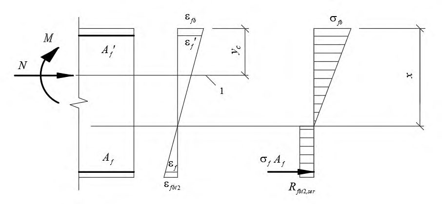
Рисунок 7 - Приведенное поперечное сечение и схема напряженно-деформированного состояния элемента с трещинами для расчета его по деформациям при действии изгибающего момента
где 0 fb S , 0 fbt S , 0 f S - статические моменты соответственно сжатой и растянутой зоны фибробетона, и растянутой арматуры относительно нейтральной оси.
Для прямоугольных сечений с растянутой арматурой высоту сжатой зоны определяют по формуле
где 0 h b Af f = .
Для внецентренно сжатых и внецентренно растянутых элементов положение нейтральной оси (высоту сжатой зоны) определяют из уравнения
где - расстояние от нейтральной оси до точки приложения продольной силы , отстоящей от центра тяжести полного сечения (без учета трещин) на расстоянии ; y N N 0 M e N =
0 0 0 0 0 0 , , , , , f fbt fb f fbt fb S S S I I I - моменты инерции и статические моменты соответственно сжатой и растянутой зон фибробетона и растянутой арматуры относительно нейтральной оси.
Допускается для элементов прямоугольного сечения высоту сжатой зоны при действии изгибающих моментов и продольной силы определять по формуле M N
где - высота сжатой зоны изгибаемого элемента, определяемая по формулам (6.41) (6.42); x M
- момент инерции и площадь приведенного поперечного сечения, определяемые для полного сечения (без учета трещин). , red red I A
Значения геометрических характеристик сечения элемента определяют по общим правилам расчета сечения упругих элементов.
В формуле (6.44) знак «плюс» принимают при сжимающей, а знак «минус» при растягивающей продольной силе.
где - расстояние от центра тяжести растянутой арматуры до точки приложения равнодействующей усилий в сжатой зоне. z
Для элементов прямоугольного сечения значение определяют по формуле z
Для элементов прямоугольного, таврового (с полкой в сжатой зоне) и двутаврового поперечных сечений значение допускается принимать равным . z 0 0,8 h
Значения коэффициентов приведения растянутой арматуры к фибробетону принимают равными:
где fb red E , и fbt red E , - определяют по 6.2.16;
Ef , red - приведенный модуль деформации растянутой арматуры, определяемый с учетом влияния работы растянутого бетона между трещинами по формуле
Значения коэффициента f определяют по 6.2.12 .
Определение кривизны фибробетонных элементов на основе нелинейной деформационной модели
- при определении кривизн от непродолжительного действия нагрузки в расчете используют диаграммы кратковременного деформирования сжатого и растянутого фибробетона, а при определении кривизн от продолжительного действия нагрузки -диаграммы длительного деформирования фибробетона с расчетными характеристиками для предельных состояний второй группы;
- для элементов с нормальными трещинами в растянутой зоне напряжение в арматуре, пересекающей трещины, определяют по 8.2.32 СП 63.13330.2012 по значениям усредненных на участке между нормальными трещинами относительных деформаций пересекающей трещины растянутой АКП.
7Предварительно напряженные конструкции
7.1Предварительные напряжения арматуры
7.2Расчет конструкций по предельным состояниям первой группы
Расчет предварительно напряженных элементов по прочности
Расчет следует выполнять с учетом 9.2.1-9.2.6 СП 63.13330.2012.
Расчет предварительно напряженных элементов на действие изгибающих моментов в стадии эксплуатации по предельным усилиям
Расчет предварительно напряженных элементов в стадии предварительного обжатия
где fp A - площадь сечения напрягаемой арматуры; fp - предварительные напряжения с учетом первых потерь и коэффициента fp =1,1.
где - расстояние от точки приложения продольной силы с учетом влияния изгибающего момента от внешней нагрузки, действующей в стадии изготовления (собственная масса элемента), до центра тяжести сечения ненапрягаемой арматуры, растянутой от этих усилий (рисунок 8), определяемое по формуле p e p N M
e 0 p - расстояние от точки приложения силы до центра тяжести сечения элемента; p N fb R - расчетное сопротивление фибробетона сжатию, принимаемое по линейной интерполяции как для класса фибробетона по прочности на сжатие, численно равного передаточной прочности фибробетона fbp R ;
3 fbt R - расчетное сопротивление фибробетона растяжению, принимаемое по линейной интерполяции как для класса фибробетона по остаточной прочности на растяжение, численно равного передаточной прочности фибробетона на растяжение fbtp R .
Высоту сжатой зоны фибробетона определяют в зависимости от значения , определяемого по формуле (6.1): R
б) при - по формуле 0 R x h =
Рисунок 8 - Схема усилий и эпюра напряжений в сечении, нормальном к продольной оси изгибаемого предварительно напряженного элемента при его расчете по прочности в стадии обжатия
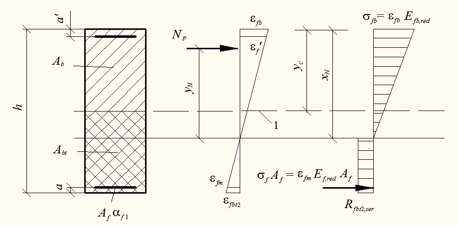
расчет производят из условия
где где e 0 p - см. 7.2.4; f z - расстояние от центра тяжести сечения элемента до растянутой ненапрягаемой арматуры.
Высоту сжатой зоны определяют:
если граница сжатой зоны проходит в ребре (рисунок 2, б ), т. е. условие (7.5) не соблюдается, расчет производят из условия
высоту сжатой зоны определяют:
Расчет по прочности нормальных сечений на основе нелинейной деформационной модели
7.3Расчет конструкций по предельным состояниям второй группы
Расчет предварительно напряженных фибробетонных элементов по образованию и раскрытию трещин
Определение момента образования трещин, нормальных к продольной оси элемента
Допускается момент образования трещин определять без учета неупругих деформаций растянутого фибробетона, принимая в формуле (7.13) Wpl=Wred . Если при этом требования по предельным состояниям второй группы не удовлетворяются, то момент образования трещин следует определять с учетом неупругих деформаций растянутого фибробетона.
где Wpl - момент сопротивления приведенного сечения для крайнего растянутого волокна, определяемый с учетом положений 6.2.6; r e e p яр + = 0 - расстояние от точки приложения усилия предварительного обжатия до ядровой точки, наиболее удаленной от растянутой зоны, трещинообразование которой проверяется; P p e 0 - то же, до центра тяжести приведенного сечения;
- расстояние от центра тяжести приведенного сечения до ядровой точки определяют по формуле r
В формуле (7.13) знак «плюс» принимают, когда направления вращения моментов и внешнего изгибающего момента противоположны; «минус» - когда направления совпадают. яр P e M
Значения упругого момента сопротивления приведенного сечения по растянутой зоне сечения и площадь приведенного поперечного сечения элемента Ared определяют по 6.2. red W
Для прямоугольных сечений значение Wpl при действии момента в плоскости оси симметрии допускается определять по формуле (6.20).
Значение Mcrc определяют, принимая относительную деформацию фибробетона bt, max у растянутой грани элемента от действия внешней нагрузки, равной предельному значению относительной деформации фибробетона при растяжении fbt,ult , установленному по 6.1.13.
Расчет ширины раскрытия трещин, нормальных к продольной оси элемента
где - момент инерции, площадь приведенного поперечного сечения элемента и расстояние от наиболее сжатого волокна до центра тяжести приведенного , , red red c I A y сечения, определяемые с учетом площади сечения сжатой и растянутой зон фибробетона, площади сечения растянутой арматуры согласно 6.2.17; - усилие предварительного обжатия; N p
- изгибающий момент от внешней нагрузки и усилия предварительного обжатия, определяемый по формуле p M
e 0 p - расстояние от точки приложения усилия предварительного обжатия до центра тяжести приведенного сечения. p N
Знак «минус» в формуле (7.16) принимают, когда направления вращений моментов и Np · e 0 p не совпадают, и «плюс» - когда совпадают. M
Допускается напряжение f определять по формуле
где - расстояние от центра тяжести арматуры, расположенной в растянутой зоне сечения, до точки приложения равнодействующей усилий в сжатой зоне элемента; z bt A - площадь растянутой зоны сечения элемента; fp e - расстояние от центра тяжести арматуры до точки приложения усилия Np .
Для элементов прямоугольного поперечного сечения значение определяют по формуле z
где - высота сжатой зоны, определяемая согласно 6.2.17 с учетом действия усилия предварительного обжатия Np . x N
Напряжения f , определяемые по формулам (7.15) и (7.17), не должны превышать ) ( , fp ser f R - .
Расчет предварительно напряженных фибробетонных элементов по прогибам 7.3.9 Расчет предварительно напряженных элементов по прогибам следует производить по 6.2.13-6.2.20 и с учетом 7.3.10, 7.3.11.
где М - изгибающий момент от внешней нагрузки; и e 0 p - усилие предварительного обжатия и его эксцентриситет относительно центра тяжести приведенного поперечного сечения элемента; p N
- D - изгибная жесткость приведенного поперечного сечения элемента, определяемая по 6.2 как для внецентренно сжатого усилием предварительного обжатия элемента с учетом изгибающего момента от внешней нагрузки (рисунок 9).
1 - уровень центра тяжести приведенного без учета растянутой зоны фибробетона поперечного сечения
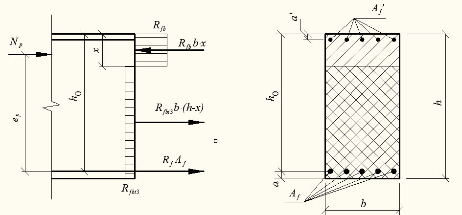
Рисунок 9 - Приведенное поперечное сечение и схема напряженно-деформированного состояния изгибаемого предварительно напряженного элемента с трещинами при его расчете по деформациям
Определение кривизны предварительно напряженных элементов на основе нелинейной деформационной модели
8Конструктивные требования
АПриложение А. Основные буквенные обозначения
Усилия от внешних нагрузок и воздействий в поперечном сечении элемента
М -изгибающий момент;
Мр -изгибающий момент с учетом момента усилия предварительного обжатия относительно центра тяжести приведенного сечения;
N -продольная сила;
Q -поперечная сила;
Характеристики материалов
Rfb,n -нормативное сопротивление фибробетона осевому сжатию;
Rfb, Rfb,ser -расчетные сопротивления фибробетона осевому сжатию для предельных состояний соответственно первой и второй групп;
Rfbt,n -нормативное сопротивление фибробетона осевому растяжению;
- Rfbt, Rfbt,ser -расчетные сопротивления фибробетона осевому растяжению для предельных состояний соответственно первой и второй групп;
- Rfbt 2 n -нормативное остаточное сопротивление фибробетона растяжению, соответствующее значению перемещений внешних граней надреза 0,5 мм при испытаниях на изгиб;
- Rfbt 3 n -нормативное остаточное сопротивление фибробетона растяжению, соответствующее значению перемещений внешних граней надреза 2,5 мм при испытаниях на изгиб;
Rfbt 2 , Rfbt 2 ,ser -расчетные остаточное сопротивление фибробетона растяжению для предельных состояний соответственно первой и второй групп;
- Rfbt 3 , Rfbt 3 ,ser -расчетные остаточное сопротивление фибробетона растяжению для предельных состояний соответственно первой и второй групп;
Rfb,loc -расчетное сопротивление фибробетона смятию;
Rbond -расчетное сопротивление сцепления арматуры с фибробетоном;
- Rf, R,f,ser -расчетные сопротивления композитной полимерной арматуры растяжению для предельных состояний соответственно первой и второй групп;
- Rfw -расчетное сопротивление поперечной композитной полимерной арматуры растяжению;
Efb -начальный модуль упругости фибробетона при сжатии и растяжении;
Efb,red -приведенный модуль деформации сжатого фибробетона;
Efbt,red -приведенный модуль деформации растянутого фибробетона;
Ef -модуль упругости арматуры;
Ef,red -приведенный модуль деформации композитной полимерной арматуры, расположенной в растянутой зоне элемента с трещинами;
fbo , fto -предельные относительные деформации фибробетона соответственно при равномерном осевом сжатии и осевом растяжении;
f 0 -относительные деформации композитной полимерной арматуры при напряжении, равном Rf ;
, fb sh -относительные деформации усадки фибробетона;
b,cr -коэффициент ползучести фибробетона; f -отношение соответствующих модулей упругости арматуры Ef и фибробетона Efb1 .
Геометрические характеристики
- b -ширина прямоугольного сечения; ширина ребра таврового и двутаврового сечений;
- bf, b'f -ширина полки таврового и двутаврового сечений соответственно в растянутой и сжатой зонах;
- h -высота прямоугольного, таврового и двутаврового сечений;
- hf, h'f -высота полки таврового и двутаврового сечений в растянутой и сжатой зонах, соответственно;
- a, a' -расстояние от равнодействующей усилий в арматуре до ближайшей грани сечения; h 0 , h' 0 -рабочая высота сечения, равная ( h -a ) и ( h -a' ), соответственно;
- x -высота сжатой зоны фибробетона;
-относительная высота сжатой зоны фибробетона, равная ; 0 x h
- sw -расстояние между хомутами, измеренное по длине элемента;
- e 0 -эксцентриситет продольной силы N относительно центра тяжести приведенного сечения, определяемый с учетом 7.1.7 и 8.1.7;
- e, e' -расстояния от точки приложения продольной силы N до равнодействующей усилий в арматуре S и S , соответственно;
- е 0 р -эксцентриситет усилия предварительного обжатия относительно центра тяжести приведенного сечения;
- ер -расстояние от точки приложения усилия предварительного обжатия Nр с учетом изгибающего момента от внешней нагрузки до центра тяжести растянутой или наименее сжатой арматуры;
- l -пролет элемента;
- l an -длина зоны анкеровки;
- l р -длина зоны передачи предварительного напряжения в арматуре на фибробетон;
- l 0 -расчетная длина элемента, подвергающегося действию сжимающей продольной силы;
- i -радиус инерции поперечного сечения элемента относительно центра тяжести сечения;
- d f , dfw -номинальный диаметр стержней соответственно продольной и поперечной композитной полимерной арматуры;
- Af -площадь сечения продольной композитной полимерной арматуры;
- Afw -площадь сечения хомутов, расположенных в одной нормальной к продольной оси элемента плоскости, пересекающей наклонное сечение;
- f -коэффициент армирования, определяемый как отношение площади сечения арматуры f к площади поперечного сечения элемента b ho без учета свесов сжатых и растянутых полок;
- A -площадь всего фибробетона в поперечном сечении;
- Ab -площадь сечения фибробетона сжатой зоны;
- Abt -площадь сечения фибробетона растянутой зоны;
Ared -площадь приведенного сечения элемента;
- Aloc -площадь смятия фибробетона;
- I -момент инерции сечения всего фибробетона относительно центра тяжести сечения элемента;
- Ired -момент инерции приведенного сечения элемента относительно его центра тяжести;
- W -момент сопротивления сечения элемента для крайнего растянутого волокна.
Ключевые слова: фибробетон, полимерная композитная фибра, полимерная композитная арматура, конструкции, расчет по прочности, расчет по трещиностойкости, расчет по деформациям
Руководитель организации-разработчика АО «НИЦ «Строительство»
Генеральный директор
А.В. Кузьмин
Руководитель разработки Директор НИИЖБ им. А.А. Гвоздева
А.Н. Давидюк
Заведующий лабораторией № 13 НИИЖБ им. А.А. Гвоздева
В.Ф. Степанова
Ответственный исполнитель: главный научный сотрудник НИИЖБ им. А.А. Гвоздева
Т.А. Мухамедиев